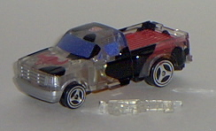
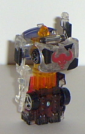
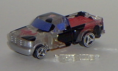
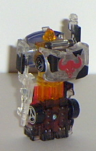
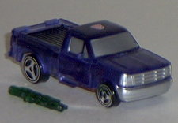
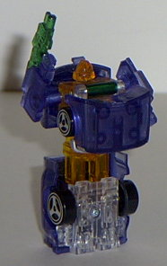

 
Size : Spychanger (comes packaged individually)
Color Scheme : Black, clear plastic, red, dark glittery blue, transparent orange, transparent black, and some chrome silver
Rating : 4.8
Vehicle mode is a pickup
truck. Although the white-with-black-splotches color scheme would probably
be ugly on most other transformers, it definitely works on a pickup truck.
That, combined with the steer head painted on the front, definitely gives
Ironhide a "farm" feel in this mode. This mode has practically no extras
whatsoever, which is a definite plus- the lower robot stomach is slightly
visible under the middle part of the truck, but it's no biggie. The robot
feet even become exhaust pipes in this mode, which is clever. The thing
that bugs me about this mode, though, is that Ironhide's gun can't be stored
in any compartment on the bottom or anything. And it would have been real
easy to make something like that possible, too, so it makes me rather mad
that I have to get a separate container to put Ironhide's gun in if I want
to keep him in this mode.
Ironhide's transformation
is the same as the other Wave 1 Spychangers- seperate the two race car
halves slightly to reveal the upper leg extensions, pull the robot arms
out, flip the hood down to reveal the robot head, and you're done. I haven't
liked most of the Spychanger's robot modes so far, and Ironhide fits into
this category well. His large, bulky truck chest sticks out entirely too
far- in fact, the farthest out of any of the Spychangers. His only points
of articulation is this mode are his arms, near the shoulders, which definitely
limits playabilty and posability. His legs are all just one big piece,
and the back of the truck covers up the back of most of the legs, rather
ruining the appearance. Ironhide's arms also don't come out anywhere near
as far as they should- fully extended, then barely come to Ironhide's truck-chest.
He just looks rather doofy in this mode.
A pretty nice and original
truck mode, but a bad and blocky robot mode. Unless you're a completist
or you like the show character a lot for some reason, I'd pass.
 Ironhide
(2002 Version, Transparent, KB Toys Exclusive) (RiD)
Ironhide
(2002 Version, Transparent, KB Toys Exclusive) (RiD)


Size
: Spychanger (comes packaged
individually)
Color Scheme
: Black, clear plastic,
red, dark glittery blue, transparent orange, transparent black, and some
chrome silver
Rating
: 4.8
To everyone's surprise, a KB Toys Exclusive, transparent version of RiD Ironhide came out in summer 2002, packaged individually (and with tech specs on the back this time). Unlike most of the other Transparent Spychanger's, Ironhide's change is quite significant. First, all of the white has been replaced with clear plastic. Secondly, the yellow has been replaced with a transparent orange. And, least but not least, the black has been replaced with a cool, smoky black. The result is very cool-looking figure, despite the very oddly-proportioned robot mode. Although the vehicle mode isn't much different (just clear), the robot mode looks very cool. The smoky black works nicely with the clear plastic, and the transparent orange used on the main body and head gives Ironhide an almost-gastly appearance in combination with his red eyes. VERY nice choice of colors, there. "Ghost Ironhide" is one of the few Transparent Spychangers I'd recommend even if you already have the original version- that is, if you like the Spychangers' design in the first place.
 Ironhide
(2003 Version, Transparent, KB Toys Exclusive) [RiD]
Ironhide
(2003 Version, Transparent, KB Toys Exclusive) [RiD]


Size
: Spychanger (comes packaged
individually)
Color Scheme
: Transparent blue,
transparent orange, transparent green, black, and some silver, chrome silver,
light red, and clear plastic
Rating
: 4.4
This version of Ironhide
sports a nifty blue color scheme, with some green, orange, ack, and silver
thrown in for good measure. Just like most of the other 2003 KB Spychangers,
the color scheme meshes well, but some of the old paint detailing is missing-
Ironhide's no longer a moo truck! All his spots and the bull head on his
hood are now missing! Aw, and I kinda liked those... Still, at least he
has the "gastly" eyes in robot mode, what with the transparent orange plastic
and all.
A nice color scheme,
but he's missing his trademark cow spots! He just ain't Ironhide without
'em...
Review by Beastbot